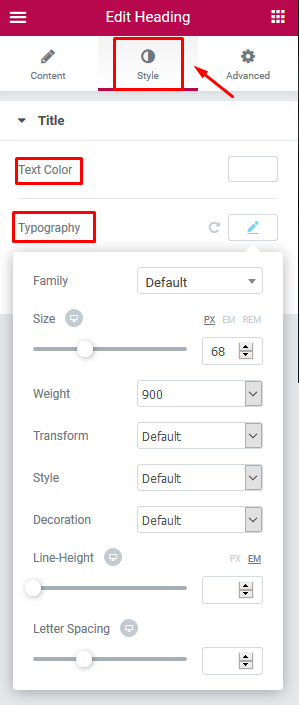
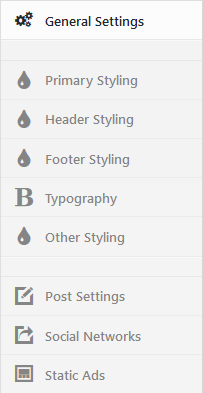

GutenVerse
Theme Documentation
Hello there...
Thank you for purchasing my theme. If you have any questions that are beyond the scope of this help file, please feel free to contact me via Support page. Thanks so much!
Created: 26. Jul 2019
By: Dannci & Themnific | Support*
- Customization and installation services
- Support for third party software and plug-ins
Theme Instalation
Installation via WP Dashboard:
- Unzip/extract the main (downloaded) theme package – to get
gutenverse.zipfile, - Go to Appearance >Themes,
- click on “Add New” > and “Upload theme”,
- click on ‘Browse’ button, find
gutenverse.zipfile on your computer and press 'Install Now', - Activate theme,
- Go to Appearance > Install Plugins after theme activation and install and activate Redux Framework plugin!
- Refresh page and 'GutenVerse - admin panel' button will appear;
- Go to GutenVerse - admin panel (theme options) and setup theme.
Installation via FTP:
- Unzip/extract the main (downloaded) theme package / twice / to get theme folder ‘gutenverse’,
- Using FTP client (e.g. Filezilla) upload '
gutenverse' folder into 'themes' folder in your WordPress installation (YOUR_HOSTING_ROOT/YOUR_SUBDIRECTORY/wp-content/themes/), - Go to Appearance >Themes, find GutenVerse theme and activate theme,
- Go to Appearance > Install Plugins after theme activation and install and activate Redux Framework plugin!
- Refresh page and 'GutenVerse - admin panel' button will appear;
- Go to GutenVerse - admin panel (theme options) and setup theme.
You have to install and activate required plugins (Redux, Elementor and GutenVerse Addons). You can do this by visiting Appearance » Install Plugins inside wp dashboard.
Required Plugins
The following message may be visible after theme activation:
Go to Appearance » Install Plugins and install and activate following plugins:
- Redux Framework
- Elementor: after activation go to Elementor > Settings and make basic setup of the plugin:
Save changes and that's it. You can edit any page in the page builder later. - GutenVerse Addons
Default Setup
1. After theme activation go to Appearance > Install Plugins, and install and activate Redux Framework plugin!
2. Then go to GutenVerse - admin panel
and hit "Save Changes" button to set default style settings:
You can change styling options later.
2. Following (or similar) message may be visible after theme activation:
Click on 'Begin activating plugins' link and install and activate 'Redux Framework' (if not installed yet), Elementor and 'GutenVerse Addons' plugins. Or you can do this by visiting Appearance » Install Plugins
4. IMPORTANT! It is possible that after theme activation are images wrongly cropped and look ugly! In this case use following plugin: http://wordpress.org/extend/plugins/regenerate-thumbnails/ to regenerate old thumbnails (from previous theme).
After plugin installation start regeneration in Tools > Regen. Thumbnails. This process can take a while and you cannot close tab/window until regeneration is done.
Homepage Setup
- In 'Pages' section create new page > name it 'Home'
- Select 'Elementor Full Width' template for this page and save the page:
- Go to Settings > Reading and created 'Home' page set as Static page > Front page,

- Empty homepage is created now! In next steps, we'll create homepage content using 'Elementor' page builder.
Elementor
Important!
I recommend creating few classic blog posts before you start creating templates in Elementor. Set 'featured images' for all your posts.
- Go to Pages section and edit 'Home' page, which we have created in previous steps:
- Make sure that 'Elementor Full Width' template is selected for this page (a.), then hit 'Edit with Elementor' button (b.):
Full Width Column - Adding Slider or Carousel
- Make sure that GutenVerse Addons plugin is installed.
- In 'Elementor edit mode' hit on 'Add new section' button and add select 'one column' setion:

- Hover over the section and click on 2nd blue icon to edit section (a.) In left section select 'Full Width' and 'No Gap' options (b.)
- Then just click + sign and drag 'Themnific: Slider' (or 'Themnific: Carousel') block into setion.
- And that's it!
'Slider placeholder' will appear; on live homepage will be displayed fully functional slider.

One 'Boxed' Column
- In 'Elementor edit mode' hit on 'Add new section' button and add select 'one column' setion:
- Hover over the section and click on 2nd blue icon to edit section (a.) In left section select 'Boxed' width with 1440px and 'Wider' gap option (b.)

- Then just click + sign and drag e.g. 'Themnific: Magazine 1' block into setion.
- Adjust widget options (title, number of posts or featured category) and save page.
- Suitable blocks for 'boxed' single column are Themnific: Magazine 1, Themnific: Magazine 2,Themnific: Magazine 3
Adding Columns
- In 'Elementor edit mode' hit on 'Add new section' button and select 'two columns' section:
- Using Drag&Drop resize columns to e.g. 68% (for wide column) and 32% (for narrow column):

- Select Wider in the 'Columns Gap' option and 1380px boxed width.
- Click on the + sign in wide column and then drag blocks from the left menu; e.g. add 'Themnific: Blog (for homepage)' block to this wide column:
- Adjust 'Number of posts' parameter and optionally select 'featured category' in left panel.
- Click on the + sign in narrow column, then drag Sidebar block from the left menu into it.
- Choose 'Sidebar' section which you can setup in Appearance > Widgets
Adding Hero image
- Add new section and add two column layout:
- Hover over the section and click on 2nd blue icon to edit section:
- Switch to the Style tab (a.) and add background image (b.)
- Then just click on + sign in the left column and drag; e.g. Heading block into it.
.
- Click on heading; and in Content / Style / Advanced tabs customize the appearance (size, text colors, font style, padding etc.).

- After all these, adjust overall padding (spacing) of the 'hero' section.
a. edit section ,
b. switch to the Advanced tab,
c. adjust top and bottom padding of the section.
Blog Template
- If you want to create News (or Blog) page, create empty page (Default template),
- name it News (or Blog),
- go to Settings > Reading and set this page as 'Post page',
- adjust number of posts.

Theme Setup - Admin panel
Theme comes with extensive options panel with functions divided to these sections:

General Settings:
- Upload your Main logo image,
- Choose blog layout for blog page and archives,
- Enable/disable 'Uppercase' fonts,
- Enable/disable 'Additional Letter Space'.
Primary styling:
- Select font family (with color, style and width) for main body text,
- Choose colors for typographic elements: body, wrapper, containers (ghost color), text/links, hover, borders etc.

Header Styling & Settings:
- Selact type of the header,
- Setup color scheme (background, font, links and border colors) for header,
- Set other colors for header elements (sub-menus etc.),
- Set custom margins and width limitation for logo image.
Footer Styling:
- Setup footer logo and footer text.
- Select color scheme for footer (footer background, text, links, hover, borders etc.)
Other Styling:
- Set font styling for 'Meta' sections (date, category etc. post information)
- Choose background color for elements (buttons, lines etc.),
- Select text/link color for elements (buttons, lines etc.),
- Set color scheme for image backgrounds.
Headings Typography:
- Select Font-family for all headings (h1- h6) and 'post titles',
- Select font weight for all headings (h1- h6) and 'post titles',
- Select Font-size for all headings (h1- h6) and 'post titles',
- Select font color for all headings (h1- h6) and 'post titles',
Post Settings:
- Turn On/Off partial post sections.
Social Networks Settings:
- Enable "Social Networks" section,
- Enter the full URL of social network, your profile or account (enter full URL: http:// or https:// including).
If you are finished click on "Save changes" button!
Custom Templates (for Posts and Pages)
- Create a page or a post.
- In Page Attributes (Post Attributes) section select custom template ('No Sidebar Layout', 'Right Sidebar Layout' etc.)
- Click the Publish button to publish your page/post.
Post Settings
In post add/edit post screen, below the post content is located custom 'Themnific Post Options' tab:
a) You can select the Image + Title layout on the single post,
b) Enable / Disable featured image on the single post (for 'Classic Image' only).
Custom Widgets
Go to Appearance > Widgets and setup your sidebar and footer widget areas. Widgets are very easy to setup.
Following widgets are used in theme demo:
In theme demo may be used custom widgets which come with 3dr party plugins (Top 10 plugin, Newsletter etc.).
Please see 'Plugins' chapter for more info about these plugins.
Images
IMPORTANT! It is possible that after theme activation are images wrongly cropped and look ugly!
In this case use this plugin: http://wordpress.org/extend/plugins/regenerate-thumbnails/ to regenerate old thumbnails from previous theme.
After plugin installation start regeneration in Tools > Regen. Thumbnails This process can take a while and you cannot close tab/window until regeneration is done.
Images and thumbnails are generated automatically.
To display thumbnails correctly upload images via WP interface using "Set featured image" button.
After image upload set featured image.
Featured Images - Minimal Sizes
- Main Slider section: 995x770px;
- Magazine widgets: 630x650px;
- Single post (Hero + Big Cover Image): 1600x770px;
- Single post (Classic Image): 862x525px;
- Blog template: 878x700px;
Custom Menu :
! Create own custom menus first! Please see following tutorial !
Colored Menu Item (on the right)
1. Toggle 'Screen Options' on the top of the menu screen:

2. Enable 'CSS Classes' option:
3. Toggle any menu item and type special word into 'CSS Classes' field
Menu Icons
1. Before (or after) menu label add this piece of code
<i class="fas XXX"></i>
Enter full icon code - 'fa' class is required.

2. For XXX you can set any icon name. You can find all icon names on Font Awesome homepage.
3. You can see how-to video here. It is not tutorial for my theme but the process is the same.
Plugins
Elementor
Elementor plugin will help you create awesome layouts for your pages.
Go to Appearance » Install Plugins inside wp dashboard and install and activate Elementor plugin.
Basic setup of this plugin is very easy; go to Elementor > Settings and disable default color and fonts:

Save changes and that's it. You can edit any page in the page builder now.
MailChimp for WordPress
You can easily create newsletter subscribe form with 'MailChimp for WordPress' Plugin: Plugin Homepage
Into search field (in Plugins > Add New) paste MailChimp for WordPress and Install this plugin
Plugin can be set in MailChimp for WP section:
In demo is used subscribe form with following markup: https://pastebin.com/bM7T51rY
Top 10 – Popular posts plugin for WordPress
Into search field (in Plugins > Add New) paste 'Top 10 – Popular posts plugin for WordPress' and Install and activate this plugin.
After plugin activation setup 'Popular Posts [Top 10]' widget in Appearance > Widgets with following, highlighted options:
Recent Tweets Widget
Theme is compatible with Recent Tweets Widget plugin. Plugin is used in demo site.
In search field (Plugins > Add New) insert 'Recent Tweets Widget' and Install plugin.
Plugin widget can be set in Appearance > Widegts:
Note!: You need to get "consumer and secret" codes for Recent Tweets Widget:
- Go to https://dev.twitter.com/apps/new and log in, if necessary
- Enter your Application Name, Description and your website address. You can leave the callback URL empty.
- Accept the TOS, and solve the CAPTCHA.
- Submit the form by clicking the Create your Twitter Application
- Copy the consumer key (API key) and consumer secret from the screen into widget fields
Social Pug
Plugin page: Plugin Homepage
Into search field (in Plugins > Add New) insert 'Social Pug' and Install this plugin.
Plugin can be set in dashboard > Social Pug:
Theme is compatible with AddToAny Share Buttons too.
Contact Form 7
Plugin page: Plugin Homepage
Into search field (in Plugins > Add New) insert 'Contact Form 7' and Install this plugin
You can create own contact form(s) in main wp menu > Contact.
You can display created 'contact form' on any page using shortcode.
On demo page is used contact form with following markup: https://pastebin.com/a0Hcywkd
Please read plugin documentation for more info about this very flexible plugin.
Other Recommended Plugins
Autoptimize →
Smush →
FitVids for WordPress →
WP Featherlight →
WP Sticky Sidebar →
Demo Import (XML file)
Make sure that GutenVerse theme, Elementor and GutenVerse Addons plugins are installed and activated before demo import.
One Click Demo Import
Install and activate ' One Click Demo Import' plugin.
After that import full demo content easily in Appearance > Import Demo Data.
Just hit 'Import Demo Data' and wait until import is done.
Manual import via XML file
- In main theme package is attached XML file. Unzip this XML file.
- Go to Tools > Import; install and activate 'WordPress Importer' plugin,
- Find XML file on your computer and import XML file.
- Check "Download and import file attachments" option.
- XML file is bit bigger and sometimes (slow server etc.) needs to be imported more times (until 'Have Fun' message is shown).
After XML file import:
- set imported 'Home' page as static front page in Settings > Reading;
- save imported custom menus for 'theme locations' (in Appearance > Menus);
- footer and sidebar widgets can be set in Appearance > Widgets. In demo are used these widgets:
- edit 'Home' page layout in Elementor edit mode:
- set own color scheme in Appearance > GutenVerse admin panel.
Elementor templates
If you don't want to import whole demo content you can import just elementor templates (e.g. layout of the homepage) using .json file.
.json files are located in main theme package, in 'spec' folder. Extract .json files to you computer.
Extract .json files to you computer.
Import template when you are editing any page in Elementor - > click on 'Add Template' button > Import Template:

Find .json file on your computer and import Elementor template.
Important!
Due licenses all imported images are for testing purposes only and cannot be used on your live website!!!
You can download free photos for your commercial & personal works on sites like:
http://picjumbo.com/
http://pixabay.com/
https://unsplash.com/grid
Translation
This theme is translation/localization ready and comes with gutenverse.pot file. File is located in ../gutenverse/lang/ folder.
- You need to use localized WordPress installation (core) in the first place:

If not, localization will be not successful. - .pot file is located in root theme folder inside 'lang' sub-folder:
../gutenverse/lang/ - Download poedit software here,
- Install software it and translate
gutenverse.potfile (line by line), - Once you have translated all the strings, you can save this as your .po file.
The filename of your .po / .mo file is crucial! Gettext uses the ISO 639 standard for language abbreviations and ISO 3166 for locales. If your translation is written in Deutsch for example, your file name will look like de_DE.po. Capitalization is also important here. For a full list of language and country codes, check out these two links:
Once you save, POEdit by default automatically creates a .mo file alongside your .po file. Put these files into 'lang' folder.
- Access your wp-config.php file found in your WordPress' root folder. Your file should already contain define('WPLANG', ''); but if it does not, you can add it in. You simply need to add your language and locale code into the define. If you were to translate your theme into German, you would have this:
define('WPLANG', 'de_DE');
Your internationalization is complete!
Once again, thank you so much for purchasing this theme.